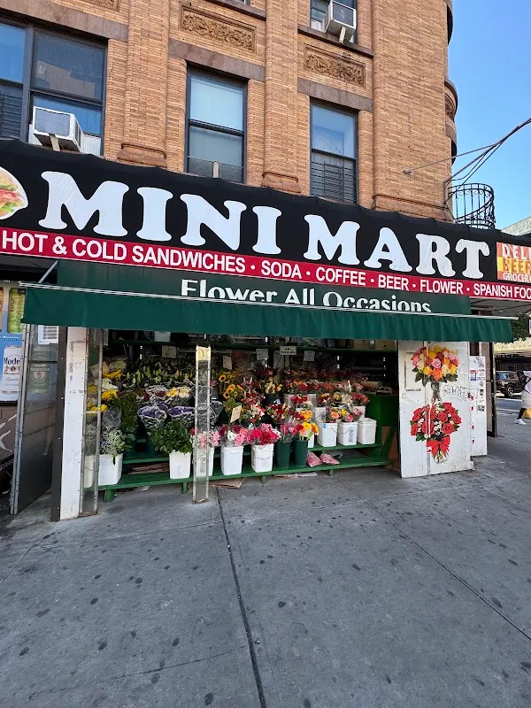
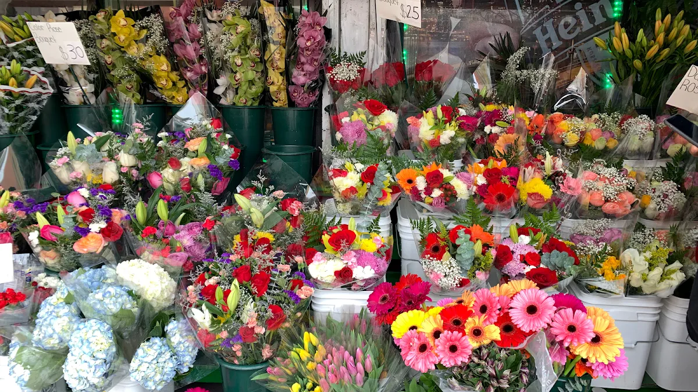

Flowers for
your occasion
2154 Flower For All Occasions in Manhattan. Explore floral design studies, then discuss the actual stems and arrangement.
Explore the flowers →2154 Frederick Douglass Blvd, New York, NY 10026
What’s the occasion?
Start with a gesture, a table or a gathering. The florist can shape the real flowers around the conversation.
A small gestureExplore bouquet studies, then ask the florist about the colours and stems available.
Explore bouquets →Demo selection. Confirm products, prices and availability with the store.
An arrangement of ideas
Sample floral designs leave space for stems, size, colours and the vessel the florist confirms.


Find 2154
2154 Flower for all Occasions is at 2154 Frederick Douglass Blvd, New York, NY 10026. Explore the business photographs, then plan a visit or call to ask about the current selection.
Plan your visit →